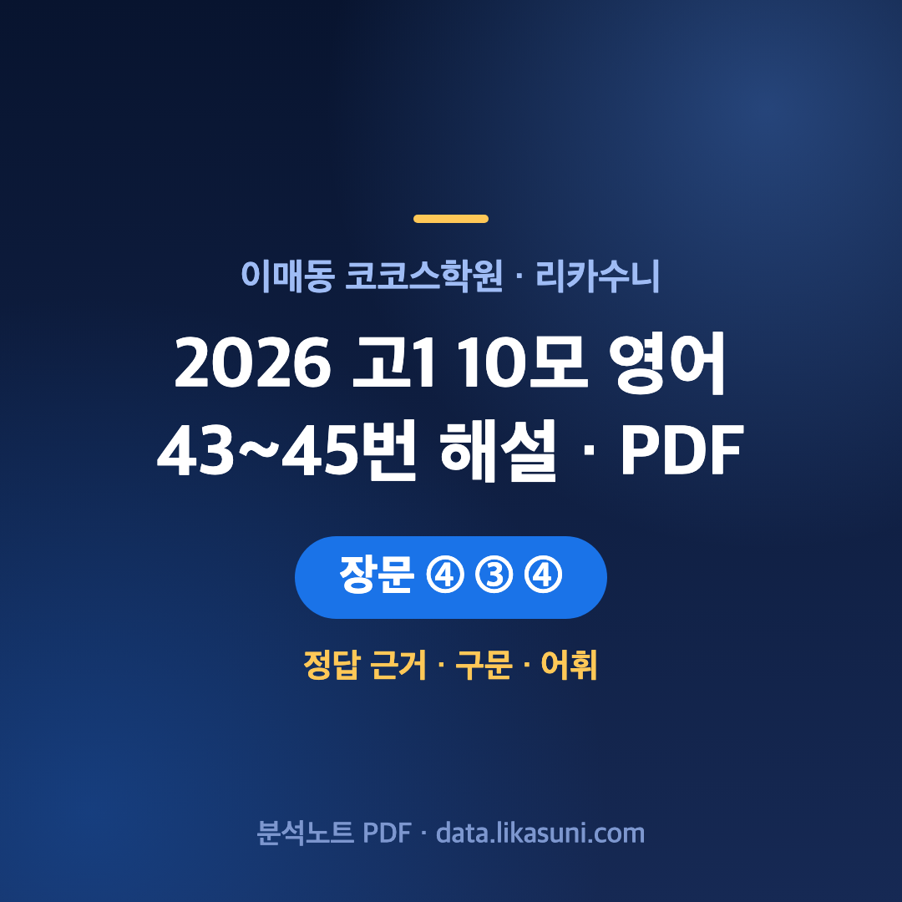
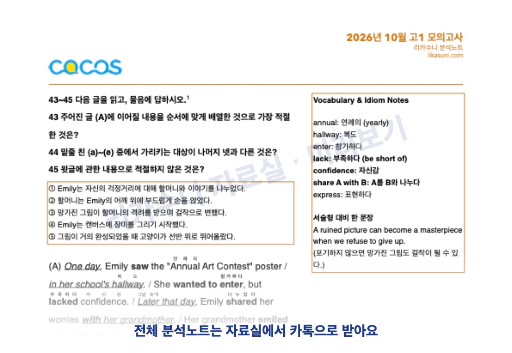

리카수니 분석노트 해설 · 이매동 코코스학원
2026 고1 10모 영어 43~45번 장문 해설·분석이에요. (2026 10월 고1 영어 모의고사 43~45번 · 순서 ④ · 지칭 ③ · 내용 일치 ④)
정답 근거, 오답 거르는 법, 시험에 나올 문장 원문, 구문(not A but B · 분사구문 · 과거완료), 어휘를 정리했고 분석노트 전자책·pdf 보는 곳은 글 아래에 있어요.
안녕하세요, 이매동 코코스학원 리카수니 원장입니다.
학생 요청으로 만든 분석노트를 바탕으로 정리했어요. 시험지를 옆에 펴 놓고 보시면 더 잘 보여요.
| 한눈에 보는 정답 · 시험: 2026년 10월 고1 전국연합학력평가 영어 · 번호: 43~45번 장문 세트 (43 순서 · 44 지칭 · 45 내용 일치) · 정답: 43번 ④ (D)-(B)-(C) · 44번 ③ (c) · 45번 ④ |
미술 대회에 낼 그림이 고양이 때문에 망가졌지만, 할머니의 격려로 Emily가 그림을 새로운 걸작으로 바꾸고 용기를 얻는 이야기예요.
흐름은 (A) 참가 결심 → (D) 다음 날 그림이 물에 젖어 망가짐 → (B) 바로 그때 할머니의 위로 → (C) 나란히 앉아 걸작 완성이에요.
| · 43번: (A) 끝에서 참가를 결심하고, (D)는 The next day 로 그림을 그리기 시작해요. (D) 끝에서 Emily가 낙담해 주저앉고, (B)는 Just then 할머니가 어깨에 손을 얹는 장면이에요. (C)의 나란히 앉은 장면은 (B)에서 의자 두 개를 끌어온 뒤예요. → 43번 정답 ④ (D)-(B)-(C) · 44번: (a) 참가를 결심한 사람, (b) '망가졌는걸요'라며 목소리가 떨린 사람, (d) 용기와 지혜를 찾은 사람, (e) 자기 캔버스를 바라본 사람은 모두 Emily예요. (c) 의자 두 개를 끌어와 도우려는 사람만 할머니예요. → 44번 정답 ③ (c) · 45번: 본문은 started painting sunflowers 로 '해바라기'를 그렸어요. '장미'는 틀린 내용이에요. → 45번 정답 ④ |
| · 43번: (B)가 (D)보다 앞이면 그림이 망가지기도 전에 위로하는 셈이라 안 돼요. The next day·Just then 같은 시간 표현과 단락 끝 상황을 이어 보세요. · 44번: 대명사 바로 앞뒤 동작이 누구 것인지(목소리가 떨림 = Emily, 의자를 끌어옴 = 할머니) 확인하세요. · 45번: ①②③⑤는 본문에 그대로 나와요. 그림 소재 같은 구체적인 명사는 선택지와 한 단어씩 맞춰 보세요. |

▲ 2026 고1 10모 영어 43~45번 장문 해설·분석 pdf 분석노트 미리보기
| ① "Art is about expressing yourself and sharing your heart, not being the best." → 해석: 미술은 최고가 되는 것이 아니라 너 자신을 표현하고 마음을 나누는 거란다. → 출제 포인트: A, not B (B가 아니라 A) / 전치사 about 뒤 동명사 병렬(expressing · sharing · being) ② A tipped vase rained down water, turning her masterpiece into a wet mess. → 해석: 넘어진 꽃병에서 물이 쏟아져, 그녀의 걸작을 젖은 엉망으로 만들었다. → 출제 포인트: 결과의 분사구문 turning (turned·to turn 아님) / turn A into B ③ Gazing at the transformed canvas, she knew she had already won. → 해석: 바뀐 캔버스를 바라보며, 그녀는 자신이 이미 이겼다는 것을 알았다. → 출제 포인트: 분사구문 Gazing (주어 she 와 능동) / 깨달은 것보다 먼저 일어난 일은 과거완료 had won (출처: 2026년 10월 고1 전국연합학력평가 영어 43~45번) |
| 1) A, not B (= not B but A): 최고가 되는 것이 아니라 표현하고 나누는 것 2) 분사구문 Hearing this, she decided ~ (이 말을 듣고) 3) 동명사 주어 giving up won't turn it into a masterpiece (단수 취급) 4) (being) ready to help her rebuild confidence / help + 목적어 + 동사원형 5) 과거완료 she knew she had already won / she had found something greater |
| 영어 | 뜻 |
|---|---|
| annual | 연례의 |
| hallway | 복도 |
| enter | (대회에) 참가하다 |
| lack | 부족하다 |
| confidence | 자신감 |
| tip | 넘어뜨리다 |
| mess | 엉망진창 |
| sink to one's knees | 주저앉다 |
| defeated | 낙담한 |
| kneel | 무릎을 꿇다 |
| masterpiece | 걸작 |
| tremble | 떨리다 |
| ruin | 망치다 |
| tilt | 기울이다 |
| encouragement | 격려 |
| exclaim | 외치다 |
| gaze at | ~을 응시하다 |
| transform | 바꾸다 |
| 서술형 대비 분석노트에 '서술형 대비 한 문장'(A ruined picture can become a masterpiece when we refuse to give up. 포기하지 않으면 망가진 그림도 걸작이 될 수 있다)과 영어 핵심 요약을 정리해 두었어요. Hearing this → When she heard this 처럼 분사구문을 절로 바꾸는 연습도 넣었어요. |
| 📂 2026 고1 10모 영어 43~45번 분석노트 전자책·pdf 보는 법 자료실에서 이 세트 분석노트를 전자책으로 바로 볼 수 있어요. (끊어 읽기·해석·구문·어휘 3쪽) 인쇄용 pdf 는 카카오 로그인 후 카톡으로 받을 수 있고, 다른 번호도 요청할 수 있어요. 회차 자료와 전과목 문제지·정답 pdf 는 같은 페이지 위쪽 회차 메뉴에서 볼 수 있어요. ▶ 2026 고1 10모 영어 43~45번 해설·전자책 https://data.likasuni.com/moe/go1/2026-10/eng/43-45/ |
Q. 2026 고1 10모 영어 43~45번 장문 해설·분석 정답은?
A. 43번 ④ (D)-(B)-(C) · 44번 ③ (c) · 45번 ④
Q. 분석노트 pdf 는 어디서 받나요?
A. 리카수니 자료실(data.likasuni.com)에서 카카오 로그인 후 카톡으로 받을 수 있어요. 위 안내의 링크로 이동하세요.
이상 2026 고1 10모 영어 43~45번 장문 해설·분석 pdf 정리였어요. 궁금한 점은 댓글로 남겨 주세요.
| 🏫 이매동 코코스학원 안내 분당 이매동 코코스학원은 초등·중등·고등 영어와 수학을 가르쳐요. 모의고사·수능특강·내신 대비가 궁금하시면 편하게 문의해 주세요. · 홈페이지: https://www.cocosedu.co.kr/ · 주소: 경기 성남시 분당구 판교로 476 2층 |
#2026고110모영어 #2026고110모영어분석 #고110모영어 #고110모43번 #고110모44번 #고110모45번 #2026년10월모의고사 #2026년10월고1영어 #10모영어장문 #장문독해 #notAbutB #분사구문 #영어분석노트 #이매동영어학원 #코코스학원 #리카수니